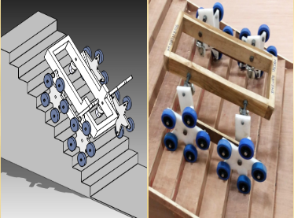

• An App controlled and mobile phone, bluetooth, driven smart locking system.
• One can lock the door from outside and inside and see the status of the lock anytime on the mobile phone.
• The password employed for locking/unlocking may be shared with friends enabling others also operate the system.
Students: 1. Subhajit Sinha - MFD16I016
2. Hrishikesh Borale - EVD16I016
3. Aneesh D H - COE16B001

• The Electronic Braille Reader converts English text to Braille code and enables the visually impaired to sense and read through touch. Six servo motors are connected to the Raspberry Pi’s GPIO pins and are powered using a Lithium Polymer battery.
• When a pen drive with the file to-be read is inserted in the Raspberry Pi, the contents of the pen drive are displayed on the screen one by one.
• Once the file is chosen (by pressing the appropriate key), the text is decoded and sent to the motors thus enabling reading.
• A low cost, low jerk, and gravitationally stable, chair for helping Divyang/patients to climb staircase.
Students: Mridul Gandhi - MDM13B015
• To realize a solar thermal energy operable Stirling engine for water pumping.
• In order to satisfy the rising energy demands of global consumption a new ecofriendly renewable power source needs to be explored, conceptualized and developed.
• Solar energy is a free and clean energy resource which is available to humans or the local culture in abundant.
• Agriculture needed production and protection materials to achieve high productivity. Agriculture fertilizer and chemical frequently needed to kill insects and growth of crops.
• In that more than one lakh deaths in each year, especially in developing countries due to the pesticides sprayed by human being. The pesticide affects the nervous system of humans and also leads to disorders in body.
• A remote controlled UAV (Unmanned Aerial Vehicle) is used to spray the Pesticide as well as fertilizer to avoid the humans from pesticide poison. The UAV is operated by manual flight plans and the Sprayer is manually triggered by RF controlled Nozzle.
Students: 1. Vivek - SMT17M007
2. Praveen Mishra - SMT17M012
3. Abhishek Rana - SMT17M006
• This is a project-based course in which you will build an IoT based Smart Water Monitoring System that can detect the flow of water and record the volume of water that flows through the pipe for a given period of time.
• The data is then sent to the cloud for storage and analysis.
• By placing this system in a smart building, we will be able to collect and analyse the water usage patterns of the residents and save a lot of water from wastage.
• The increasing number of cab accidents has been mostly due to the bad health condition of the cab driver.
• A wearable device was designed and made to monitor the pulse rate and body temperature, analyze the sensor data and then inform the user about the cab drivers health status using Bluetooth module and an app designed for this purpose.
Students: 1. Abhay Vardhan - ESD15I015
2. Vyshak Nath C A - EVD15I016
• Managing time and tracking attendance manually is a frustrating activity during lecture hours.
• The Project is aimed at designing FRS (Fingerprint Recognition System) based portable attendance system which will manage the student attendance.
Students: Vedant Bassi - CED15I013
• Availability of books makes access to the information which should not be limited by any time limits.
• So, we have come up with a major solution over this problem.
• We have developed a machine that will deliver books 24/7 any time.